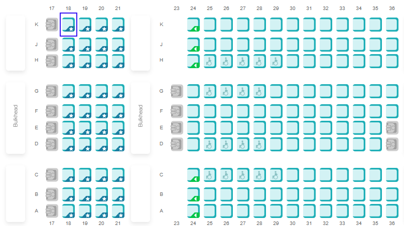
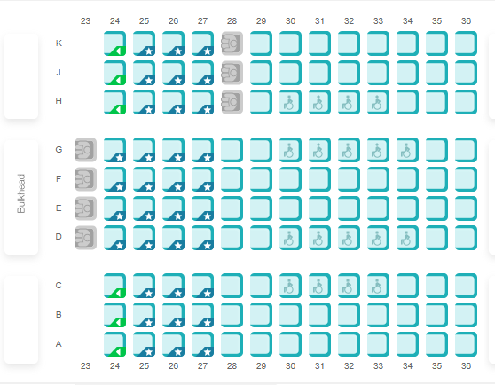
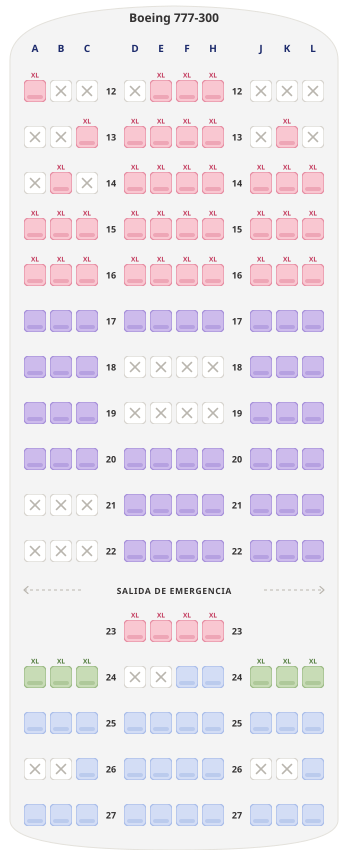

CHINA · ASSENTOS
Luiz Gabriel Ladeia Scaburi · Rio de Janeiro → Dubai → Shenzhen · Milão → São Paulo — 08 de abril a 01 de maio de 2027

3 voos · classe econômica · ida Emirates (EK248 + EK328) · volta LATAM (LA8073)
Consulta feita em 27/10/2026 · valores por passageiro e por trecho · Emirates em BRL · LATAM em USD, a partir de
atendimentolusatravel@gmail.com
+55 41 99189-6076
Os três voos
Ida em dois trechos pela Emirates, com conexão em Dubai. Volta pela LATAM, de Milão a São Paulo, com conexão para Curitiba. Os mapas de assento e os valores de cada voo estão logo abaixo.
| Voo | Data | Trecho | Aeronave | Categorias pagas |
| Ida · Emirates · classe econômica | ||||
| EK248 | qui · 08/04/2027 | Rio de Janeiro (GIG) → Dubai (DXB) | Boeing 777 | BRL 206 – 755 |
| EK328 | dom · 11/04/2027 | Dubai (DXB) → Shenzhen (SZX) | Boeing 777-300ER | BRL 137 – 370 |
| Volta · LATAM · classe econômica | ||||
| LA8073 | sáb · 01/05/2027 · 13:00 → 20:00 | Milão (MXP) → São Paulo (GRU) · conexão para Curitiba | Boeing 777-300 · 12 h | USD 50,16 – 149,10 |
Valores por passageiro e por trecho. Na Emirates o assento regular é gratuito, mas também precisa ser marcado; na LATAM os valores são "a partir de", em dólar.
Marcação de assentos
Em cada voo, as categorias com o valor por passageiro e, abaixo, o mapa da cabine com a disponibilidade no momento da consulta. As cores dos assentos correspondem às categorias listadas.
Ida · Emirates
Rio de Janeiro → Dubai → Shenzhen · valores em BRL

Volta · LATAM
Milão → São Paulo · valores em USD, a partir de
Valores por pessoa, por trecho, informados pelas companhias em 27/10/2026 e sujeitos a alteração até a marcação. Na LATAM os valores são "a partir de": o preço final depende da posição exata do assento. A disponibilidade indicada é a do momento da consulta.
Valores da marcação
Por passageiro e por trecho. A mesma categoria pode ser escolhida em um voo e não no outro. Nada reservado, apenas cotado.
| Categoria | EK248 GIG → DXB | EK328 DXB → SZX | Ida completa 2 trechos |
| Ida · Emirates · valores em BRL | |||
| Assento regular Gratuito nos dois voos | Gratuito | Gratuito | Gratuito |
| Assento preferencial Primeiras fileiras da cabine · desembarque mais rápido | BRL 206 | BRL 137 | BRL 343 |
| Mais espaço para as pernas Fileira 24 · atrás da divisória (bulkhead) | BRL 755 | BRL 370 | BRL 1.125 |
Ida: valores informados pela Emirates em 27/10/2026. Os preços podem mudar de acordo com o passageiro e o destino.
| Categoria | Localização | LA8073 MXP → GRU · a partir de |
| Volta · LATAM · valores em USD | ||
| LATAM+ (XL) Mais espaço para as pernas | Fileiras 12 a 16 e 23 | USD 149,10 |
| Saída de emergência Exige passageiro apto | Fileira 24 · A–C e J–L | USD 141,12 |
| Mais à frente Desembarque mais rápido | Fileiras 17 a 22 | USD 103,74 |
| Standard Espaço padrão | Fileiras 24 (D–H) a 27 | USD 50,16 |
Volta: valores informados pela LATAM em 27/10/2026, em dólar americano. A conversão para reais segue o câmbio do dia do pagamento.
Como escolher. Consulte os mapas acima e nos envie, para cada um dos três voos, a fileira e a letra do assento desejado. Indique uma segunda opção caso a primeira já não esteja disponível no momento da marcação.
Exemplo: EK248 · 1ª opção 18K · 2ª opção 19K · EK328 · 1ª opção 24K · 2ª opção 24A · LA8073 · 1ª opção 17A · 2ª opção 19L
Observações
- Assentos gratuitos também devem ser marcados para garantir a posição escolhida.
- A marcação paga é confirmada somente após o pagamento à companhia aérea e, em regra, não é reembolsável.
- Assentos com ícone de cadeira de rodas podem ser realocados pela companhia para passageiros com mobilidade reduzida.
- Na Emirates, os assentos com mais espaço para as pernas ficam junto às divisórias (bulkhead): bagagem de mão vai no compartimento superior e a tela fica no braço da poltrona.
- Na LATAM, os valores são em dólar e "a partir de": confirmamos o preço exato do assento escolhido antes da cobrança.
- Este documento não constitui confirmação ou reserva firme dos serviços descritos.